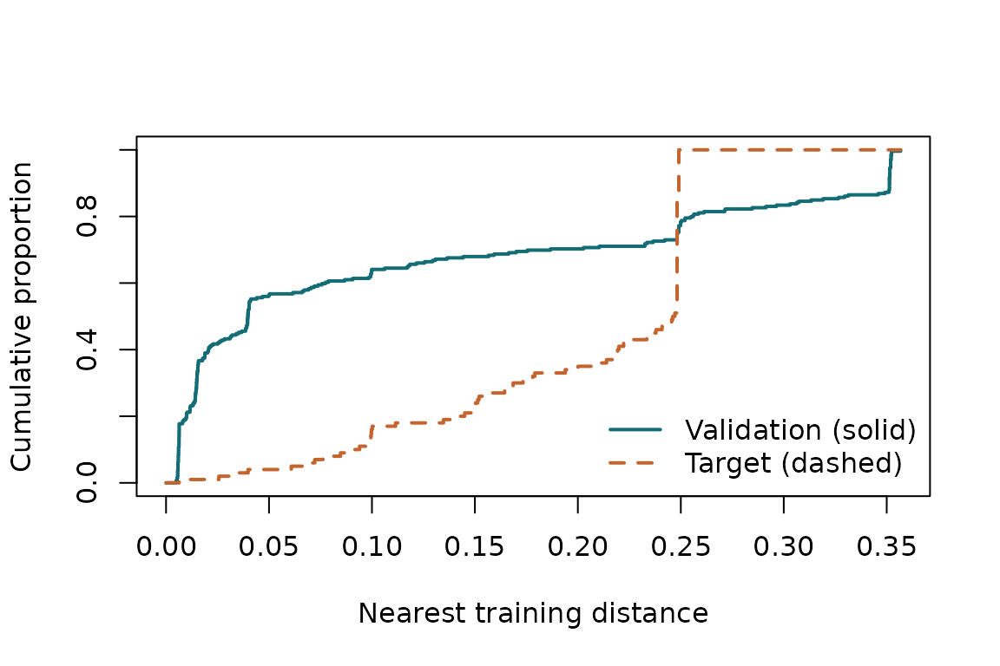

The Jura soil survey measured trace-metal concentrations in Switzerland. The public dataset distributed with gstat contains 259 original training sites and 100 reserved validation sites. We predict natural-log cadmium at those reserved sites. They define the target; their responses are used only to evaluate the final predictions.
This tutorial uses one fold construction and the new package’s covariance estimator. The paper repository contains the fixed fitting implementation, 40 fold constructions, alternative targets and retained results used in the paper. Tutorial results are an illustration, not a replacement for that complete reproduction.
Install gstat and sf to execute this
tutorial. CAST adds the optional kNNDM candidate. No data
download or credentials are needed once these packages are
installed.
Load the data and define the target
data("jura", package = "gstat")
train_sf <- sf::st_transform(
sf::st_as_sf(jura.pred, coords = c("long", "lat"), crs = 4326), 2056)
target_sf <- sf::st_transform(
sf::st_as_sf(jura.val, coords = c("long", "lat"), crs = 4326), 2056)
# Express projected distances in kilometres, using one common origin.
origin <- colMeans(sf::st_coordinates(train_sf))
xy <- sweep(sf::st_coordinates(train_sf), 2, origin) / 1000
qx <- sweep(sf::st_coordinates(target_sf), 2, origin) / 1000
y <- log(jura.pred$Cd)
observed_target <- log(jura.val$Cd)
target <- prediction_target(qx, label = "100 reserved Jura sites")All prediction errors below are on the natural-log cadmium scale. Mean squared error on this scale is not the same as error in the original concentration units.
Construct candidates and calculate diagnostics
nearest_other <- as.matrix(stats::dist(xy))
diag(nearest_other) <- Inf
buffer <- stats::median(apply(nearest_other, 1, min))
schemes <- list(
random = spatial_folds(xy, 5, "random", seed = 52),
block = spatial_folds(xy, 5, "block", seed = 52),
buffered = spatial_folds(xy, 5, "buffered", buffer = buffer, seed = 52)
)
if (requireNamespace("CAST", quietly = TRUE)) {
schemes$knndm <- spatial_folds(xy, 5, "knndm", target = target, seed = 52)
}
covariance <- estimate_covariance(xy, y)
covariance
#> Estimated exponential covariance
#> scale: 0.3116873 signal: 0.7156111 total variance: 0.5171883
#> fit boundary: none
comparison <- compare_cv_schemes(xy, schemes, target, covariance, criterion = "J2")
comparison
#> CV comparison by |J2|
#> scheme W J2 criterion_value selection_probability
#> random 0.11799010 0.15861849 0.15861849 0
#> block 0.51092277 -0.13175540 0.13175540 0
#> buffered 0.51092277 -0.13175540 0.13175540 0
#> knndm 0.03771657 -0.02950102 0.02950102 1
plot(comparison$audits$random)
Inspect the fitted scale, signal fraction and boundary flags. Completion of the fit does not establish that a covariance model adequately describes the data. The common full-training estimate supplies the diagnostic for every scheme.
Make predictions without using target responses
We use ordinary kriging: an unknown constant mean, exponential
spatial covariance and independent observation noise. The helper below
estimates covariance using only the observations passed to it.
gstat then estimates the constant mean and makes the
predictions.
predict_ordinary <- function(train_xy, train_y, new_xy) {
fit <- estimate_covariance(train_xy, train_y)
observations <- data.frame(x = train_xy[, 1], y = train_xy[, 2], z = train_y)
new_points <- data.frame(x = new_xy[, 1], y = new_xy[, 2])
variogram <- gstat::vgm(psill = fit$psill, model = "Exp",
range = fit$range, nugget = fit$nugget)
model <- gstat::gstat(formula = z ~ 1, locations = ~ x + y,
data = observations, model = variogram)
stats::predict(model, newdata = new_points, debug.level = 0)$var1.pred
}
target_predictions <- predict_ordinary(xy, y, qx)
target_mse <- mean((observed_target - target_predictions)^2)
target_mse
#> [1] 0.3217736These predictions use all 259 training sites and are the same whichever CV scheme is evaluated. The observed target MSE is an average of the 100 measured squared errors. It is not an expectation over repeated spatial datasets.
Refit inside each CV fold
cv_score <- function(folds) {
predictions <- numeric(length(y))
for (fold in folds) {
predictions[fold$test] <- predict_ordinary(
xy[fold$train, , drop = FALSE], y[fold$train],
xy[fold$test, , drop = FALSE]
)
}
mean((y - predictions)^2)
}
scores <- vapply(schemes, cv_score, numeric(1))
data.frame(scheme = names(scores), cv_mse = unname(scores),
observed_target_mse = target_mse,
absolute_discrepancy = abs(unname(scores) - target_mse))
#> scheme cv_mse observed_target_mse absolute_discrepancy
#> 1 random 0.2757051 0.3217736 0.04606848
#> 2 block 0.5434906 0.3217736 0.22171701
#> 3 buffered 0.5434906 0.3217736 0.22171701
#> 4 knndm 0.4433034 0.3217736 0.12152982The closest CV score need not come from the scheme with the smallest
W or abs(J2). Kriging uses all available
observations, and each fold also changes the data used to estimate its
mean and covariance. Nearest-distance matching alone does not match all
these prediction conditions.
Do not interpret one survey as establishing which scheme has the smallest expected bias across repeated datasets. In the paper’s original split, random CV is closer to observed target MSE than the diagnostic-selected kNNDM. When the northernmost sites are reserved instead, the selected block schemes are closer than random CV. The intended target matters.
Sources
The data are supplied by the jura dataset in
gstat; no measurements are bundled separately in
spCVAudit. See the gstat
dataset documentation. The data retain their upstream terms and
attribution.
Atteia, O., Dubois, J.-P. and Webster, R. (1994). Geostatistical analysis of soil contamination in the Swiss Jura. Environmental Pollution, 86, 315–327.
Goovaerts, P. (1997). Geostatistics for Natural Resources Evaluation. Oxford University Press, Appendix C.